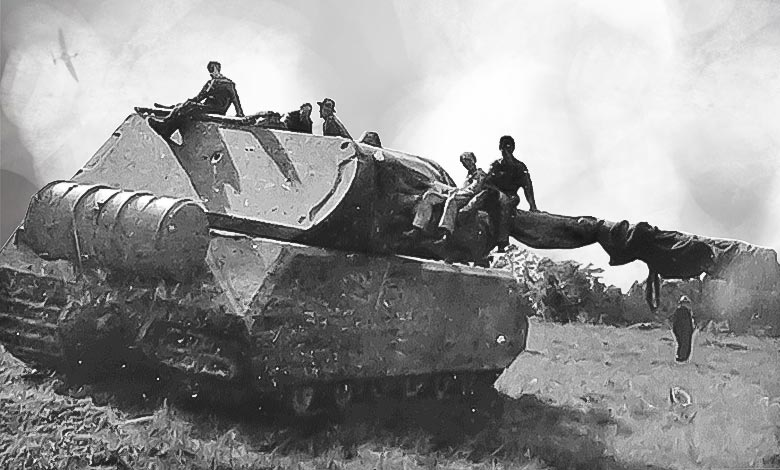
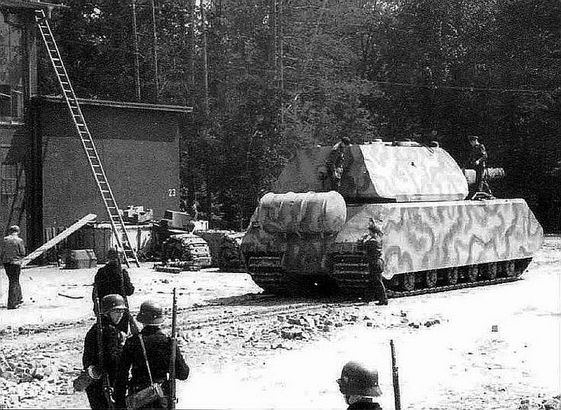

Panzerkampfwagen VIII Maus (English: "Mouse") was a German World War II super-heavy tank completed in late 1944. It is the heaviest fully enclosed armored fighting vehicle ever built. Five were ordered, but only two hulls and one turret were completed, the turret being attached, before the testing grounds were captured by advancing Soviet military forces.
These two prototypes underwent trials in late 1944. The complete vehicle was 10.2 m (33 ft) long, 3.71 m (12.2 ft) wide and 3.63 m (11.9 ft) high. Weighing 188 metric tons, the Maus's main armament was the Krupp-designed 128 mm KwK 44 L/55 gun, based on the 12.8 cm Pak 44 towed anti-tank gun also used in the casemate-type Jagdtiger tank destroyer, with a coaxial 75 mm KwK 44 L/36.5 gun. The 128 mm gun was powerful enough to destroy all Allied armored fighting vehicles in service at the time, with some at ranges exceeding 3,500 m (11,500 ft).
The principal problem in the design of the Maus was developing an engine and drivetrain which was powerful enough to adequately propel the tank, yet small enough to fit inside it — as it was meant to use the same sort of "hybrid drive", using an internal-combustion engine to operate an electric generator to power its tracks with electric motor units, much as its Porsche-designed predecessors, the VK 30.01 (P), VK 45.01 (P), and Elefant had. The drive train was electrical, designed to provide a maximum speed of 20 km/h (12 mph) and a minimum speed of 1.5 km/h (0.9 mph). However, during actual field testing, the maximum speed achieved on hard surfaces was 13 km/h (8.1 mph) with full motor field, and by weakening the motor field to a minimum, a top speed of 22 km/h (14 mph) was achieved. The vehicle's weight made it unable to use most bridges, instead it was intended to ford to a depth of 2 m (6.6 ft) or submerge up to a depth of 8 m (26 ft) and use a snorkel to cross rivers.
The Maus was intended to punch holes through enemy fortifications in the manner of an immense "breakthrough tank", while taking virtually no damage to any components.

The development of the Maus originates from a contract given to Porsche for the design of a 100-ton tank in March 1942. Porsche's design, known as the VK 100.01 / Porsche Type 205, was shown to Adolf Hitler in June 1942, who subsequently approved it. Work on the design began in earnest; the first prototype, to be ready in 1943 was initially to receive the name Mammut (Mammoth). This was reportedly changed to Mäuschen (Little Mouse) in December 1942 and finally to Maus (Mouse) in February 1943, which became the most common name for this tank.
The Maus was designed from the start to use the "electric transmission" design which Ferdinand Porsche had used in the VK 4501 (P), his unsuccessful attempt to win the production contract for the Tiger. The initial powerplant was the Daimler-Benz MB 509 gasoline engine, an adaptation of Germany's largest displacement (at 44.5 l (2,720 cu in) inverted V12 aircraft engine, the Daimler-Benz DB 603 petrol engine, and later changed to the Daimler-Benz MB 517 diesel engine. This drove an electrical generator, and their combined length occupied the central/rear two-thirds of the Maus' hull, cutting off the forward driver's compartment in the hull from direct access to the turret from within the tank. Each 1.1 meter-wide track, which used the same basic "contact shoe" and "connector link" design format as the Henschel-built Tiger II, was driven by its own electric motor mounted within the upper rear area of each hull side. Each set of tracks had a suspension design containing a total of 24 road wheels per side, in six bogie sets, staggered to be spread over the entire width of the track.
Due to the return "run" of the uniquely 110 cm-wide tracks used being completely enclosed within the fixed outer side armor panels that defined its overall hull width, with the inner vertical lengthwise walls of the hull used to mount the suspension components, a narrow lengthwise "tub" remained between the hull's inner armored walls, under and to the rear of the turret to house the engine and generator of the tank's powertrain.
The armor was substantial: the hull front was 220 mm (8.7 in) thick, the sides and rear of the hull were up to 190 mm (7.5 in). The turret armor was even thicker, the turret front was up to 240 mm (9.4 in) and the sides and rear 200 mm (7.9 in). The gun mantlet was 250 mm (9.8 in), and combined with the turret armor behind, the protection level at that section was even higher.
The initial plan for the Maus was for the prototype to have been completed by mid-1943, with monthly production scheduled to run at ten vehicles per month after delivery of the prototype. The work on the Maus would be divided between Krupp, responsible for the chassis, armament and turret and Alkett, who would be responsible for final assembly.
The Maus tank was originally designed to weigh approximately 100 tons and be armed with a 128 mm main gun and a 75 mm co-axial secondary gun. Additional armament options were studied including various versions of 128 mm, 150 mm, and 170 mm guns. In January 1943 Hitler himself insisted that the armament be a 128 mm main gun with a coaxial 75 mm gun. The 128 mm PaK 44 anti-tank field artillery piece of 1943 that Krupp adapted for arming the Maus as the Kampfwagenkanone (KwK) 44 retained, in parallel to the Porsche project, its original anti-tank Panzerabwehrkanone family designation of PaK 44 when mounted in the casemate-style Jagdtiger tank destroyer.
By May 1943, a wooden mockup of the final Maus configuration was ready and presented to Hitler, who approved it for mass production, ordering a first series of 150. At this point, the estimated weight of the Maus was 188 tons.
In his book Panzer Leader, Heinz Guderian wrote:
On 1 May a wooden model of the "Maus", a tank project of Porsche and Krupp, was shown to Hitler. It was intended to mount a 150 mm gun. The total weight of the tank was supposed to reach 175 ton. It should be considered that after the design changes on Hitler's instructions the tank will weigh 200 ton. The model didn't have a single machine gun for close combat, and for this reason they had to reject it. It had the same design flaw that made the Elefant unsuitable for close combat. In the end, the tank will inevitably have to wage a close combat since it operates in cooperation with the infantry. An intense debate started, and except for me, all of the present found the "Maus" magnificent. It was promising to be exactly that, a "giant".
This lack of close combat armament was later addressed with the addition of a Nahverteidigungswaffe (short-range defensive ordnance) mounted in the turret roof, a 7.92 mm (0.31 in) MG 34 machine gun with 1,000 rounds mounted coaxially with the main weapons in the turret, and three pistol ports for submachine guns in the sides and rear of the turret. Future planned modifications included provisions for a MG 151/20 cannon for anti-aircraft defense mounted in the turret roof.
The first, turretless prototype (V1) was assembled by Alkett in December 1943. Tests started the same month, with a mockup turret fitted of the same weight as the real turret. In June 1944 the production turret, with armament, was used for tests.
The Maus was too heavy to cross bridges. As a result, an alternative system was developed, where the Maus would instead ford the rivers it needed to cross. Due to its size it could ford relatively deep streams, but for deeper ones it was to submerge and drive across the river bottom. The solution required tanks to be paired up. One Maus would supply electrical power to the crossing vehicle via a cable until it reached the other side. The crew would receive air through a large snorkel, which was long enough for the tank to go 8 m (26 ft) under water.
In March 1944 the second prototype, the V2, was delivered. It differed in many details from the V1 prototype. In mid-1944, the V2 prototype was fitted with a powerplant and the first produced Maus turret. This turret was fitted with a 128 mm KwK 44 L/55 gun, a coaxial 75 mm KwK 44 L/36.5 gun and a coaxial 7.92 mm MG 34. The V1 prototype was supposed to be fitted with the second produced turret, but this never happened.
By July 1944, Krupp was in the process of producing four more Maus hulls, but they were ordered to halt production and scrap these. Krupp stopped all work on it in August 1944. Meanwhile, the V2 prototype started tests in September 1944, fitted with a Daimler-Benz MB 517 diesel engine, new electric steering system and a Skoda Works-designed running gear and tracks.
There was also a special railroad carriage made for transporting the Maus prototypes.

After the war, the commander of Soviet armored and mechanized troops ordered the hull of V1 to be mated with the turret of V2. The Soviets used six FAMO-built Sd.Kfz. 9 18t half-tracks, the largest of Germany's half-track vehicles built until May 1945, to pull the 55-ton turret off the destroyed hull. The resulting vehicle was then sent back to the USSR for further testing at Kubinka.